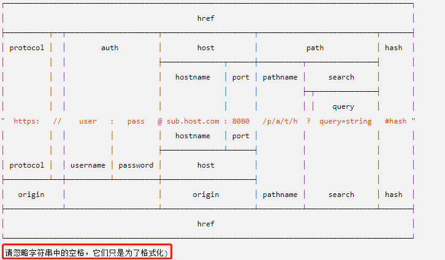

学习目标
1.1 nodejsAPI（url、querysting、http、events、fs、stream）
2.1复习课堂知识
3.1nodejsAPI（http小爬虫、request方法）
3.2 nodejs基础应用（路由、参数接受，async、npm scripts）
4.1理解复习第三节课的知识
5.1应用http模块编写一个爬虫小工具
5.2 后端表单的提交
课程大纲及其笔记
输入node指令进入控制台---交互式解析器/shell终端
1.1 nodejsAPI
1.1.1 URL模块--网址解析

1.1.1.1 url.parse(urlString[, parseQueryString[, slashesDenoteHost]])
- slashesDenoteHost <boolean> 如果为 true，则 // 之后至下一个 / 之前的字符串会被解析作为 host。 例如，//foo/bar 会被解析为 {host: 'foo', pathname: '/bar'} 而不是 {pathname: '//foo/bar'}。 默认为 false
进入交互式解析器，输入node指令
url.parse('http://www.baidu.com:8000/api/node/url?note=urlparse&course=node#aaa', true).query.course
node 结合 url
var http = require('http');
var url = require('url');
var fn = ( req, res ) => {
if( req.url !== '/favicon.ico') { //过滤请求
console.log( req.url )
console.log( url.parse( req.url, true ).query )
res.writeHead( 200, {
"Content-Type": "text/html;charset=utf-8"
});
res.write('<h1>hello url</h1>')
res.end();
}
}
var server = http.createServer( fn );
server.listen(3000);
1.1.1.2 url.resolve(from, to)
url.resolve() 方法会以一种 Web 浏览器解析超链接的方式把一个目标 URL 解析成相对于一个基础 URL。

url.resolve('/one/two/three', 'four') //相对路径，只替换最后的
// /one/two/four
url.resolve('/one/two/three', '/four') //绝对路径，一开始就替换
// /four
1.1.2 querystring模块--参数处理
querystring.parse(str[, sep[, eq[, options]]])
querystring.stringify(obj[, sep[, eq[, options]]])
querystring.escape(str)
querystring.unescape(str)
//字符串转对象
querystring.parse('note=urlparse&course=node')
//{ note: 'urlparse', course: 'node' }
//对象转字符串
querystring.stringify({ note: 'urlparse', course: 'node' })
querystring.escape('李富平') //编码-----通用性
'%E6%9D%8E%E5%AF%8C%E5%B9%B3'
querystring.unescape('%E6%9D%8E%E5%AF%8C%E5%B9%B3') //解码
'李富平'
node 结合querystring + url
var http = require('http');
var url = require('url');
var querystring = require('querystring');
var fn = ( req, res ) => {
if( req.url !== '/favicon.ico') {
console.log( req.url )
console.log( querystring.parse( url.parse( req.url ).query ) )
res.writeHead( 200, {
"Content-Type": "text/html;charset=utf-8"
});
res.write('<h1>hello url</h1>')
res.end();
}
}
var server = http.createServer( fn );
server.listen(3000);
1.1.3 http 概要模块
1.1.4 事件events模块
使用事件：EventEmitter
事件的参数
执行一个的事件监听器 on
触发 emit
var EventEmitter = require('events');
class Player extends EventEmitter {}
//EventEmitter 父级有on和emit方法，子类继承
var player = new Player();
player.on("test", ( params ) => {
console.log(params)
})
player.emit('test', 'hello events');
player.emit('test', 'hello node');
player.emit('test', 'hello h5');
1.1.5 文件fs模块
得到文件与目录的信息：stat
var fs = require('fs');
fs.stat( './../fs', ( err, result ) => {
if ( err ) {
console.log( err );
} else {
console.log( result.isDirectory() )
console.log( result.isFile() )
}
})
创建一个目录：mkdir，如果是同步创建目录 mkdirSync
var fs = require('fs');
fs.mkdir('dist', ( err ) => {
if ( err ) throw err; //抛出异常的一种方式
console.log("mkdir success!");
})
创建文件并写入内容：writeFile,appendFile 同步writeFileSync
var fs = require('fs');
//有则替换，无则创建并且写入
fs.writeFile('./test.txt', '坐在最前面，还敢点瞌睡', ( err ) => {
if ( err ) throw err;
console.log("writeFile success!");
})
//有则追加，无则没有
fs.appendFile('./test.txt', '谁给你的勇气', ( err ) => {
if ( err ) throw err;
console.log("appendFile success!");
})
读取文件的内容：readFile 同步readFileSync
var fs = require('fs');
// fs.readFile( './test.txt', ( err, data ) => {
// if ( err ) throw err;
// console.log( data.toString() ) // data为Bufferr类型，需转换为字符串类型
// })
//指定返回的编码，data则为字符串
fs.readFile( './test.txt', 'utf-8', ( err, data ) => {
if ( err ) throw err;
console.log( data );
})
列出目录的东西：readdir 同步readdirSync
var fs = require('fs');
fs.readdir( './../fs', ( err, data ) => {
if ( err ) throw err;
console.log( data );
})
重命名目录或文件：rename 同步renameSync
var fs = require('fs');
fs.rename( 'test.txt', 'test.html', ( err ) => {
if ( err ) throw err;
console.log( 'rename success' );
})
删除目录与文件：rmdir,unlink ----- 练习
1.1.6 stream流模块
var fs = require('fs');
fs.readFile( './test.html', 'utf-8', ( err, data ) => {
if ( err ) throw err;
console.log( data );
fs.writeFile('./test.txt', data, ( err ) => {
if ( err ) throw err;
console.log("writeFile success!");
})
})
读取文件流
可读流的事件
可写的文件流
pipe ------- 上一级的输出直接作为下一级的输入
链式使用 pipe
var fs = require('fs');
var readStream = fs.createReadStream('./test.html');
var writeStream = fs.createWriteStream('./note.txt');
readStream.pipe(writeStream);
2.1 复习课堂知识及其案例
3.1 nodejsAPI
3.1.1 http小爬虫 ---- 静态资源文件 --- 如果要处理数据，需要添加一个类似于jquery的node的第三方模块cheerio
http小爬虫 ---- 静态资源文件 --- 如果要处理数据，需要添加一个类似于jquery的node的第三方模块：cnpm i cheerio -D
const https = require('https');
const cheerio = require('cheerio');
function filterData ( html ) {
//$(html)
var $ = cheerio.load(html); //得到类似于jquery的$
var menus = $('.menu_main'); //得到所有包含class为menu_main的节点
console.log( menus.length );
//遍历数据
var menuList = [];
// menus.each( ( index, item ) => {
// var menuTitle = $(item).find('h2').text().trim();
// // console.log( menuTitle )
// menuList.push( {
// menuTitle //menuTitle: menuTitle 二者写法等价，前提是key和value一致
// })
// });
menus.map( (index, item ) => {
var menuTitle = $(item).find('h2').text().trim();
console.log( menuTitle )
});
// console.log( menuList );
}
https.get( lagouUrl, ( res ) => {
//console.log(res)
//res需要处理， res.on('data', ( val ) => {}) res.on('end', () => {}) res.on('error', ( err ) => {})
var html = "";
//接收数据
res.on('data', ( val ) => {
html += val;
})
//接收数据完成
res.on('end', () => {
// console.log(html);
filterData( html );
})
//接收数据出错
res.on('error', ( err ) => {
console.log( err );
})
})
3.1.2 request方法
3.2 nodejs基础应用
3.2.1 路由
01server.js --- 简单路由 ---- 服务器和路由逻辑在一起，显得不纯洁 ----- 高内聚，低耦合
var http = require('http');
var url = require('url');
var fn = ( req, res ) => {
if( req.url !== '/favicon.ico' ) {
res.writeHead( 200, {
'Content-Type': 'text/html;charset=utf-8'
})
var pathname = url.parse( req.url ).pathname;
console.log( pathname );
if( pathname == '/home' ) {
res.write('首页');
} else if( pathname == '/kind' ) {
res.write('分类');
} else if( pathname == '/cart' ) {
res.write('购物车');
} else if( pathname == '/user' ) {
res.write('用户中心');
}
res.end();
}
}
var server = http.createServer( fn );
server.listen( 3000 );
02server.js + 02route.js ---- 一方提供服务器，一方提供路由 ---- 模块化开发
//02server.js
var http = require('http');
var url = require('url');
var routes = require('./02route.js');
var fn = ( req, res ) => {
if( req.url !== '/favicon.ico' ) {
res.writeHead( 200, {
'Content-Type': 'text/html;charset=utf-8'
})
var pathname = url.parse( req.url ).pathname.split('/')[1];
console.log( pathname );
/**
* style.display = "block" style['display'] = "block"
*/
// if( pathname == "home" ){
// routes.home( res );
// }
// routes[pathname]( res ); // 如果没有匹配项，则会发生异常，需要异常处理机制 try ... catch
try { //如果存在，则走try路线，如果不存在，则走catch路线
routes[pathname]( res );
} catch ( e ) {
routes.page404( res );
}
res.end();
}
}
var server = http.createServer( fn );
server.listen( 3000 );
02route.js
var routes = {
home: ( res ) => {
res.write('首页')
},
kind: ( res ) => {
res.write('分类')
},
cart: ( res ) => {
res.write('购物车')
},
user: ( res ) => {
res.write('用户中心')
},
page404: ( res ) => { //如果用户不小心输错了网址信息，那么显示404，配合服务器的catch使用
res.write('404')
}
}
module.exports = routes;
03server.js + 03route.js + 03readFile.js(模块封装思想) 前后端合作，前端写完页面，后端负责结合路由渲染页面（fs.readFile）
03server.js ---- res.end()不要写在此处 ---- 异步操作
var http = require('http');
var url = require('url');
var routes = require('./03route.js');
var fn = ( req, res ) => {
if( req.url !== '/favicon.ico' ) {
res.writeHead( 200, {
'Content-Type': 'text/html;charset=utf-8'
})
var pathname = url.parse( req.url ).pathname.split('/')[1];
console.log( pathname );
try {
routes[pathname]( res );
} catch ( e ) {
routes.page404( res );
}
// res.end(); //读取文件是异步的，此处结束需要放在write之后
}
}
var server = http.createServer( fn );
server.listen( 3000 );
03route.js---- 引入读取文件模块，负责调用即可
var readFile = require('./03readFile.js');
var routes = {
home: ( res ) => {
// res.write('首页')
readFile( {
path: "./view/home.html",
type: 'utf-8',
success: ( data ) => {
res.write( data );
res.end();
}
})
},
kind: ( res ) => {
// res.write('分类')
readFile( {
path: "./view/kind.html",
type: 'utf-8',
success: ( data ) => {
res.write( data );
res.end();
}
})
},
cart: ( res ) => {
// res.write('购物车')
readFile( {
path: "./view/cart.html",
type: 'utf-8',
success: ( data ) => {
res.write( data );
res.end();
}
})
},
user: ( res ) => {
// res.write('用户中心')
readFile( {
path: "./view/user.html",
type: 'utf-8',
success: ( data ) => {
res.write( data );
res.end();
}
})
},
page404: ( res ) => {
// res.write('404')
readFile( {
path: "./view/page404.html",
type: 'utf-8',
success: ( data ) => {
res.write( data );
res.end();
}
})
}
}
module.exports = routes;
03readFile.js ---- es6 解构赋值 ---- 回调函数
var fs = require('fs');
var readFile = ( config ) => {
var { path, type, success } = config; //ES6 解构赋值
/**
* var path = config.path;
var success = config.success
*/
fs.readFile( path, type, ( err, data ) => {
if( err ) throw err;
success( data );
});
}
module.exports = readFile;
3.2.2 参数接收
get ---- 登录


post ---- 注册


3.2.3 Async ---- https://cnodejs.org/topic/54acfbb5ce87bace2444cbfb
串行无关联 ----- async.series ---- 时间为所有函数执行的时间之和 ---- 4*100接力跑，无需接力棒，4个人不认识
数组写法
var async = require('async');
//串行无关联
//数组写法
async.series( [
function ( cb ) {
//代码块
var a = 1;
setTimeout( function () {
cb( null, a );
}, 2000)
},
function ( cb ) {
//代码块
var b = 10;
setTimeout( function () {
cb( null, b );
}, 3000)
}
], function ( err, result ) {
if ( err ) throw err;
console.log( result ); /// ----- [ 1, 10 ]
});
对象写法
//对象
async.series( {
one: function ( cb ) {
//代码块
var a = 1;
setTimeout( function () {
cb( null, a );
}, 2000)
},
two: function ( cb ) {
//代码块
var b = 10;
setTimeout( function () {
cb( null, b );
}, 2000)
}
}, function ( err, result ) {
if ( err ) throw err;
console.log( result ); ///{ one: 1, two: 10 }
});
串行有关联 ----- async.waterfall ---- 4*100接力跑，下一个人必须拿到接力棒再跑
数组写法
var async = require('async');
async.waterfall( [
function (cb) { //连接数据库
var a = 10;
var b = 5;
cb( null, a, b ); // 传递数据库对象
},
function ( params1, params2, cb ) { // 根据数据库对象进行增删改查
console.log( params1 )
console.log( params2 )
cb( null, params1 * params2 ); // 数组中最后一个函数cb只能传递两个参数，一个是null，一个是你要传递的值（字符串、数值、对象...）
}
], function ( err, result ) {
if ( err ) throw err;
console.log( result );
})
并行无关联 ----- async.parallel ------ 运行时间为请求最长的那个函数的时间
数组写法 ----
var async = require('async');
async.parallel( [
( cb ) => {
var a = 1;
setTimeout( function () {
cb( null, a );
}, 2000)
},
( cb ) => {
var b = 10;
setTimeout( function () {
cb( null, b );
}, 3000)
}
], ( err, result ) => {
if ( err ) throw err;
console.log( result );
})
对象写法 --前端要求只请求一次数据，要你将所有的数据（2种数据）发送给前端
async.parallel( {
'banner': ( cb ) => {
var a = 1;
setTimeout( function () {
cb( null, a );
}, 2000)
},
'list': ( cb ) => {
var b = 10;
setTimeout( function () {
cb( null, b );
}, 3000)
}
}, ( err, result ) => {
if ( err ) throw err;
console.log( result );
})
并行无关联限制个数-- async.parallelLimit --如果个数为1，其实就是串行----减少服务器的压力 ---- 提交了并发量
var async = require('async');
async.parallelLimit( {
'banner': ( cb ) => {
var a = 1;
setTimeout( function () {
cb( null, a );
}, 2000)
},
'list': ( cb ) => {
var b = 10;
setTimeout( function () {
cb( null, b );
}, 3000)
}
}, 2, ( err, result ) => {
if ( err ) throw err;
console.log( result );
})
3.2.4 npm scripts
可以修改package.json中的scripts中的
"build":"node async.js"
命令行执行npm run build
使用npm run 可以查看可运行命令
4.1 理解复习第三节课讲授的内容
5.1 利用http模块编写一个小爬虫工具
5.1.1 利用爬虫获取“拉勾网”首页列表数据
5.1.2 利用npm安装cheerio模块获取数据

[
{
menuTitle: "",
list: ["","",""]
}
]
5.2 后端表单的提交
5.2.1 利用request post模拟表单提交
6.拓展及其复习
1、nodejs中的错误优先回调
2、promise的应用---封装ajax（get/post）
3、前端性能优化（其中一项就是CDN托管）
4、什么情况下不能使用箭头函数